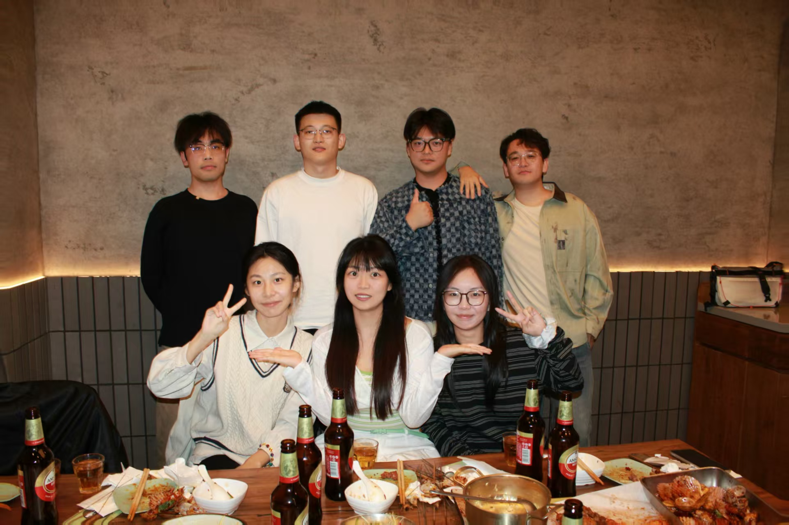

Our Team
Lab Director

Prof. Yuan Shuai
Background: Ph.D. from Shenyang Institute of Automation, CAS (2012). IEEE Member and Shenyang "Top Talent".
Projects: PI for NSFC Young Scientists Fund, NSFC General Program, and National Postdoctoral Special Funding. Key researcher in the National 863 Program.
Publications: 70+ papers (6 SCI, 50+ EI) in IEEE T-Mech, IEEE T-ASE, and Robotics and Autonomous Systems. Authored 4 monographs (Science Press, Springer) and holds 10+ patents.
Awards & Service: Best Paper Award at IEEE WRC 2022. Served as Publication Chair for IEEE-CYBER 2016/2017 and reviewer for multiple IEEE conferences and journals.
Lab Members
